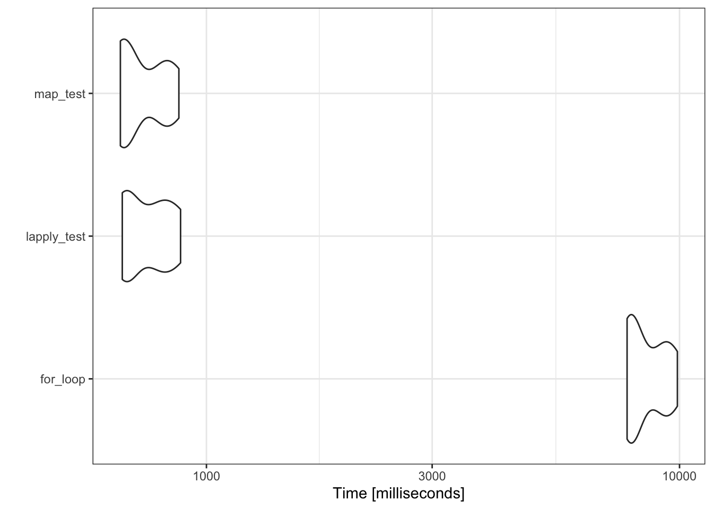

Several options for applying functions with multiple arguments taken from rows of a dataset
Author
Michelle Evans
Published
February 23, 2021
I often run into a problem where I have a dataframe of arguments that I would like to provide to a function, running it iteratively over each row. It is a difficult problem to describe, and therefore to search for solutions to on StackOverflow, but it comes up most often when doing something like a parameter search when fitting a model or running simulations. The best way I can describe it as a “row-wise apply statement”.
Let’s use the iris dataset as an example. In this example, I’m interested in creating a subset of the data corresponding to a certain size bracket of each species. Because the three species in the iris set are really different, the range of sizes I am interested in subsetting differs by species:
So for the setosa species, I am interested in plants with a petal width between 0 - 0.15, for the versicolor species, I am interested in plants with a petal width between 1 - 1.20, and for virginicia, I am interested in plants with a petal width between 2 - 2.50. This is a toy example with only three rows, and we could easily accomplish this by combining multiple instances of the subset function.
subset.df <-rbind(subset(iris, Species =="setosa"& Petal.Width >0& Petal.Width <0.15),subset(iris, Species =="versicolor"& Petal.Width >1& Petal.Width <1.20),subset(iris, Species =="virginica"& Petal.Width>2& Petal.Width <2.50))
This would become tedious as you have more subsets to do, so you may write a function to reduce how much you are hardcoding.
width_func <-function(species, min_w, max_w){ sub.df <-subset(iris, Species == species & Petal.Width > min_w & Petal.Width < max_w)return(sub.df)}
Then you could simply run this and change what row you are referring to:
Written this way, it is clear that all we are changing for each subset is the index number in the square brackets. This is clue that we can “vectorize” this process to make it easier to read and faster to run. There’s a lot on the internet on vectorization and functionals, and I recommend Noam Ross’s blog post on this as a good starting place.
Old way: a for loop
Old me would have just written a for-loop for this. I like for-loops for their readability and the time spent figuring out how to write an apply statement wasn’t usually worth the time I would be saving. The classic trade-off of investing time to learn how to do something faster in R vs. just writing what you know even if it is slower. A standard for-loop would look something like this:
#create a dataframe that we will fill in#use iris so it has the proper column names and classessubset.df <- iris[0,]for(i in1:nrow(size.brackets)){ this.subset <-width_func(size.brackets$species[i], size.brackets$min_width[i], size.brackets$max_width[i]) subset.df <-rbind(subset.df, this.subset)}
We’ve replaced the numbers in the [ ] index with an i, and it changes the numbers from 1 to 2 to 3 programmatically as it works through the for-loop, rather than needing to type it all ourselves. But this can also be done using the family of apply statements, also called ‘functionals’.
lapply
One option is to use the lapply function. Admittedly, this way is pretty hacky, but does get the job done. It is similar to a for-loop, in that what we will provide the lapply function to “apply over” is actually a vector of the row numbers we want to loop over.
Because lapply returns a list, we need that extra line of code to combine all of the subsets into one final dataframe. This way is a nice stepping stone in our thinking from for-loops to apply statements because we are still indexing by each row.
Map
The less hacky way is to use Map, a function made for this purpose.
As with lapply, Map returns a list, so we need to use the do.call(rbind,) statement to combine it into a dataframe again. Unlike the other apply statements in R, Map takes the function first, and then we provide the arguments as vectors, by indexing them from the dataframe using the $ operator sign.
Which is actually fastest?
Does it actually matter which of these we use? To test that, we will make a larger dataframe and compare the run times.
Unit: milliseconds
expr min lq mean median uq max neval
for_loop 7746.9349 7871.4320 8508.4656 8042.4870 9386.8123 9896.5862 10
lapply_test 663.9130 671.9884 752.5996 737.7693 811.9132 881.6685 10
map_test 657.8118 670.5947 733.5510 676.6685 823.5606 874.4669 10
Coordinate system already present. Adding new coordinate system, which will replace the existing one.

Yes, it does look like the for-loop is over 10x slower than the two apply statements. This is mostly caused by the rbind statement we are using to combine the subsets within each loop. At each instance, R is creating a new dataframe with the expanded dimensions, and it is this process that is a drag on memory and time.
There isn’t much difference speed-wise between lapply and Map, so which you use is mostly up to personal preference for which you find more intuitive and readable.